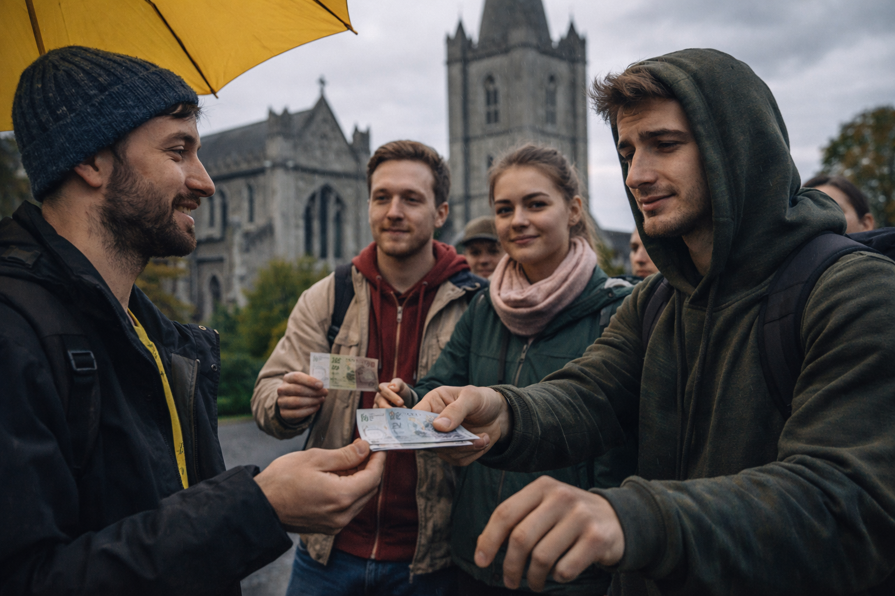

Histories d'usuari - La Il·luminació de Dublín i el Miratge del FreeTour

El cel de Dublín tenia aquell color de panxa de ruc, un gris plomís que amenaçava amb un plugim etern. En Sánchez, amb la caputxa posada i les mans a les butxaques, seguia el rastre de la seva colla d'amics, que caminaven embadalits darrere d'un paraigua groc fluorescent. El guia, un noi amb una xerrameca addictiva i un barret de llana, acabava de desgranar les penúries i glòries de la catedral de Sant Patrici.
-I recordeu -va dir el guia amb un somriure que no arribava als ulls-, aquest és un Free Tour. Jo no rebo cap sou, la vostra generositat és la meva única benzina.
En Sánchez va arquejar una cella. "Gratis", s'havia dit ell mentre planificava el viatge amb el pressupost ajustat d'un estudiant. Però, en arribar el moment del comiat, la realitat el va colpejar com una gerra de cervesa negra. Com si fos una coreografia assajada, va veure com tothom treia bitllets de vint lliures i els dipositava a la mà estesa del guia amb una barreja de culpa i reverència.
-Però nois... -va moure el cap en Sánchez, veient com els seus amics també buidaven la cartera-. Això no és lliure, és una obligació social emmascarada. És gairebé una estafa piramidal emocional!
Aquella nit, mentre els altres brindaven en un pub sorollós del Temple Bar, en Sánchez es va quedar apartat, amb la llum de la pantalla del mòbil reflectida en les seves pupil·les decidides. No podia ser que la llibertat de descobrir una ciutat depengués d'un peatge moral al final de cada cantonada. Va teclejar amb fúria, buscant una sortida a aquell sistema de "voluntat forçada".
I llavors, entre el mar de resultats, va aparèixer com una brúixola daurada: Trip2Guide.
Va descarregar l'aplicació i, de sobte, el mapa de la ciutat va deixar de ser un laberint de guies amb paraigües per convertir-se en un llibre obert. Amb Trip2Guide, en Sánchez va descobrir que ell era l'amo del seu temps i del seu destí.
L'endemà, mentre els seus amics encara dormien la ressaca, ell ja voltava pel carrer. L'app el guiava per rutes creades per altres viatgers que, de debò, volien compartir el món sense esperar res a canvi. A cada passa, el mapa cobrava vida: un monument històric li revelava els seus secrets en un clic; una cafeteria amagada en un carreró estret li oferia el millor esmorzar de la seva vida; i una petita botiga de llibres vells li permetia perdre's durant hores.
Amb Trip2Guide no només planificava; creava. Va dissenyar la seva pròpia ruta "El Dublín dels Rebels" i la va compartir amb la comunitat. Sense bitllets de vint lliures, sense pressions, sense paraigües grocs.
-Això -va xiuxiuejar en Sánchez mentre contemplava el Liffey des del pont de Ha'penny- sí que és ser lliure.
Tornar al blog